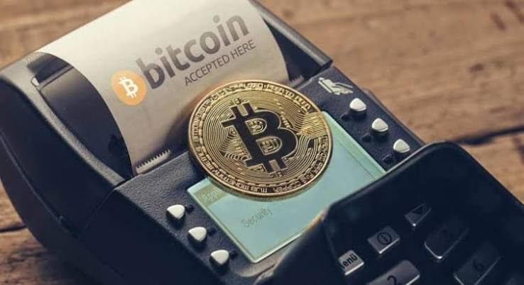

Bitcoin posee diferentes características que lo distinguen de las monedas tradicionales. Estas propiedades permiten comprender cómo funciona, qué lo hace diferente y por qué ha llamado la atención en el mundo de la tecnología y las finanzas digitales.
Bitcoin no depende de un banco central ni de una institución que controle todas sus operaciones. Su red está formada por numerosos computadores distribuidos en diferentes partes del mundo, que participan en la verificación de las transacciones.
Bitcoin existe únicamente en formato digital. No tiene billetes ni monedas físicas, por lo que se utiliza mediante herramientas electrónicas, como billeteras digitales, que permiten administrar y realizar operaciones con esta criptomoneda.
BITCOIN: UNA MONEDA EN FORMATO DIGITAL
Una característica importante de Bitcoin es que su cantidad máxima está establecida en 21 millones de unidades. Esto significa que no se pueden crear bitcoins sin límite. Esta característica forma parte de las reglas originales de su funcionamiento.
Las operaciones realizadas con Bitcoin quedan registradas en una base de datos pública conocida como blockchain. Gracias a esto, las transacciones pueden ser consultadas y verificadas por los participantes de la red, sin que sea necesario revelar públicamente la identidad real de cada usuario.

EJEMPLO DE UTILIZACIÓN DE BITCOIN
Bitcoin permite realizar transferencias entre personas ubicadas en diferentes países mediante Internet. Su red funciona a nivel mundial, aunque su uso y aceptación pueden variar dependiendo de las leyes y condiciones de cada lugar.
El precio de Bitcoin puede subir o bajar dependiendo de factores como la oferta, la demanda y las condiciones del mercado. Por esta razón, su valor no permanece fijo y puede experimentar cambios importantes con el tiempo.
Para obtener información adicional sobre esta criptomoneda, puedes visitar su sitio web oficial.
SITIO OFICIAL DE BITCOIN